In dem Register "Archivanzeige" werden alle gefundenen Archiveinträge, gemäß den zuvor getroffenen Einstellungen, angezeigt.
Hinweis
Während der Archivsuche wird das folgende Fenster angezeigt, wobei durch Anwahl des Buttons "Abbruch" die Suche gestoppt werden kann.
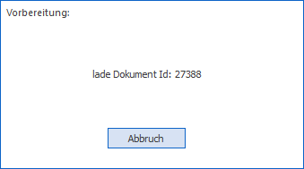
Wird dieses gemacht, so werden in der Tabelle "Archiv" nur jene Einträge angezeigt, die zum Zeitpunkt des Abbruches bereits geladen waren.
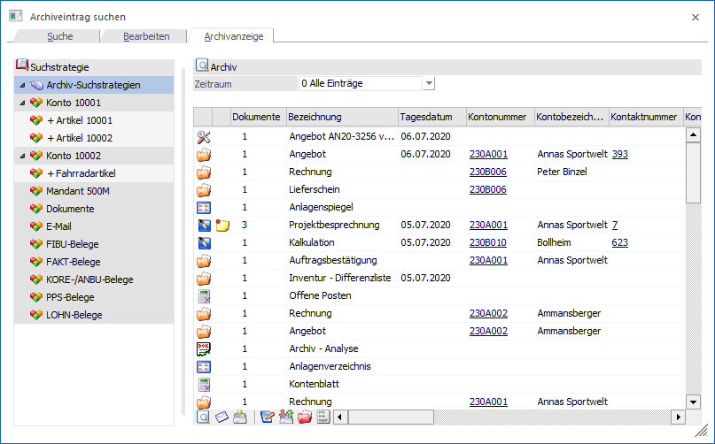
Das Register ist in die folgenden Bereiche unterteilt:
ü Suchstrategie
ü Zeitraum
ü Tabelle "Archiv"
ü Tabelle "Klammerung"
Suchstrategie
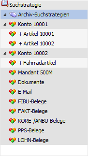
Im linken Bereich des Fensters werden alle zuvor definierten Suchstrategien angezeigt. Per Doppelklick kann eine Strategie gewählt und dadurch die Suche erneut ausgelöst werden.
Archiv
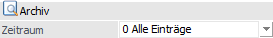
Ø Zeitraum
Mit Hilfe dieser Auswahlliste kann ausgewählt werden, von wann die anzuzeigenden Archivdokumente stammen sollen. Dabei stehen folgende Optionen zur Verfügung:
ü 0 - Alle Einträge
ü 1 - das letzte Jahr
ü 2 - das letzte Halbjahr
ü 3 - das letzte Quartal
ü 4 - das letzte Monat
ü 5 - die letzte Woche
ü 6 - heute
Tabelle "Archiv"
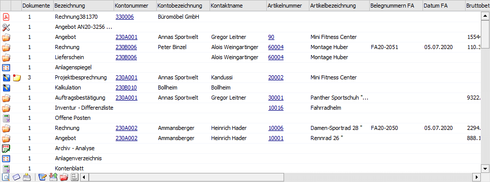
In der Tabelle stehen folgende Spalten zur Verfügung:
Ø Dateiart
Zur besseren Orientierung wird in der ersten Spalte das Icon der Dateiart gemäß Windowseinstellung angezeigt. Des Weiteren kann per Doppelklick das aktuelle Dokument in dem dafür vorgesehenen Windows-Programm geöffnet werden.
Hinweis
Wenn dem Archivdokument ein Formulartyp ungleich "000 - <LEER>" zugeordnet wurde, dann stammt das Icon aus diesem.
Ø Klammerung
In der zweiten Spalte wird durch das Symbol angezeigt, dass es sich um ein geklammertes Dokument handelt.
Ø Dokumente
In dieser Spalte wird die Anzahl der Dokumente des Archiveintrags angezeigt, d.h. bei einer Zahl größer 1 handelt es sich um ein geklammertes Archivdokument.
Ø Bezeichnung
An dieser Stelle wird der Dateiname des Archivdokuments angezeigt.
Ø Beschlagwortung (Spalte 5 bis 15)
In diesen Spalten wird die Beschlagwortung der Archivdokumente angezeigt. Da diese Beschlagwortung die unterschiedlichsten Schlagwörter aufweisen kann, wird der Inhalt der Spalten immer dynamisch gebildet. D.h. die WinLine analysiert beim Aufbau der Tabelle die ersten 10 verwendeten Schlagwörter der anzuzeigenden Archiveinträge und stellt dieses in der Tabelle da.
Ø Archivierungsdatum
Hier wird das Datum der Archivierung angezeigt. Im Gegensatz zum Schlagwort "003 - Tagesdatum" wird dieses automatisch gesetzt (abhängig von Einlogdatum) und kann nicht nachträglich editiert werden.
Ø Dateiname (optional)
In dieser Spalte wird die interne Bezeichnung des Archivdokuments angezeigt.
Ø Dokumenten-Id
Bei der Dokumenten-Id handelt es sich um eine interne fortlaufende Nummer, anhand derer jeder Archiveintrag eindeutig identifiziert werden kann.
Ø Mandant
Es wird der jeweilige Mandant angezeigt, in dem das Dokument archiviert wurde.
Ø geklammertes Dokument Nr.
Mit Hilfe dieser Auswahlliste kann zwischen den einzelnen geklammerten Dokumenten gewechselt werden. Dieses hat einen direkten Einfluss auf die folgenden Aktionen:
ü Button "Vorschau" (Dokumenten-Vorschau)
ü Button "Dokument anzeigen"
ü Button "Dokument zum Bearbeiten extrahieren"
ü Button "Update - ersetze Archiveinträge"
ü Button "neue Version einspielen"
ü Button "Beschlagwortung"
Ø Versionsnummer
Gibt es mehrere Versionen eines Archiveintrags, so kann aus der Auswahlliste das gewünschte Dokument gewählt werden. Dieses hat einen direkten Einfluss auf die folgenden Aktionen:
ü Button "Vorschau" (Dokumenten-Vorschau)
ü Button "Dokument anzeigen"
ü Button "Dokument mailen"
ü Button "Speichern unter…"
ü Button "Dokument zum Bearbeiten extrahieren"
Ø Formulartyp
Durch Auswahl eines Eintrages aus der Auswahlliste kann dem jeweiligen Dokument ein (neuer) Formulartyp zugeordnet werden. Voraussetzung, um Formulartypen in der Auswahlliste zu erhalten ist, dass solche angelegt sind (siehe Kapitel Formulartypen - Anlage) und der Benutzer die Berechtigung hat, diese zu benutzen.
Ø Formulartypname
In dieser Spalte wird der Name des gewählten Formulartyps angezeigt.
Ø Berechtigung
Für jeden Archiveintrag kann ein Berechtigungsprofil vergeben werden, wobei dieses über den Formulartyp vorbelegt wird. Wenn die Archivsuche aufgerufen wird erfolgt eine Prüfung, ob der Benutzer einer Benutzergruppe zugeordnet wurde, welche in dem jeweiligen Profil enthalten ist und ob somit eine Anzeige bzw. Bearbeitung erlaubt wäre (nähere Informationen entnehmen Sie bitte dem WinLine ADMIN - Handbuch).
Hinweis
Benutzern des Typs "Administrator" oder mit der Administratorenberechtigung "Benutzeradministrator" steht in der Auswahlbox der Punkt ">> Neues Profil" zur Verfügung. Über die Anwahl dieses Eintrags kann in der Folge ein neues Berechtigungsprofil angelegt werden.
Achtung
Wird in der Formulartypen - Anlage die Berechtigung bei einem bestehenden Formulartyp geändert, so hat diese Veränderung eine direkt Auswirkung auf alle bestehenden Archivdokumente des Formulartyps. D.h. ggfs. manuelle Einstellungen werden durch jene des Formulartyps - ohne weitere Rückfrage - ersetzt!
Ø Usernummer
In dieser Spalte wird die Benutzernummern jenes Benutzers angezeigt, welcher das Dokument archiviert hat.
Ø Dokumententyp (optional)
Über den Inhalt dieser Spalte ist erkennbar, ob es sich um einen Autoarchiv-Belege der WinLine FAKT handelt (Belegerfassung (Autoarchiv)) oder nicht (Standard).
Ø Herkunft
Jeder Archiveintrag hat eine spezifische Herkunft (manuelle Archivierung, CRM-Dokument, Beleg Pro, E-Rechnung, etc.). In dieser Spalte wird hierüber Auskunft gegeben.
Ø rechte Maustaste
Wenn die Spalte über kein DrillDown verfügt, dann stehen über die rechte Maustaste alle Funktionen der Tabellenbuttons zur Verfügung. Zusätzlich gibt es die folgenden Einträge, welche sich automatisch auf die aktuelle Spalte / Zeile beziehen:
ü Nur nach xxx: yyy suchen
Es
wird eine neue Suche ausgelöst und nach dem Schlagwort "xxx" mit Inhalt "yyy"
gesucht.
ü Zusätzlich nach xxx: yyy
suchen
Es wird die bestehende Suche erweitert und zusätzlich nach dem
Schlagwort "xxx" mit Inhalt "yyy" gesucht.
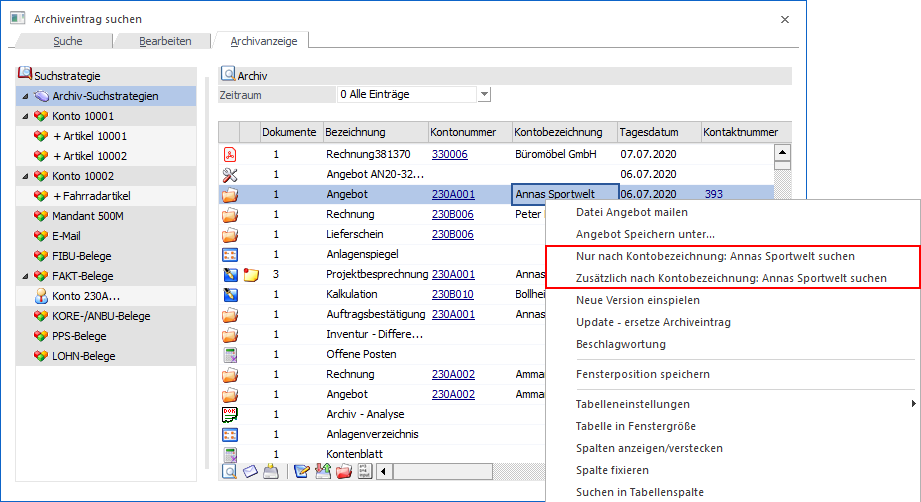
Tabellenbuttons "Archiv"
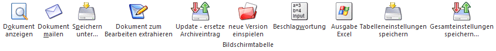
Ø Dokument anzeigen
Mit Hilfe dieses Buttons wird das aktuelle Dokument in dem dafür vorgesehenen Windows-Programm geöffnet.
Ø Dokument mailen
Durch Anwahl des Buttons "Dokument mailen" wird (sofern ein Mail-Client installiert ist) ein neues Mail geöffnet, wobei das aktuelle Dokument als Anhang eingefügt wird. Durch die Einstellung "Mail Client = SMTP" wird das WinLine Postausgangsbuch geöffnet.
Ø Speichern unter…
Mit dieser Funktion kann ein Archivdokument, bzw. durch Mehrfachselektion mehrere Dokumente, an einem "externen" Speicherort abgespeichert werden. Durch Anwahl dieses Buttons öffnet sich zunächst der Ordnerdialog, aus dem der gewünschte Speicherort gewählt werden kann.
Ø Dokument zum Bearbeiten extrahieren
Bei Anwahl dieses Buttons wird das Dokument an einem zu definierenden Ort auf der Festplatte abgelegt, wobei nicht nur das Dokument als solches, sondern auch eine Beschlagwortungsdatei gebildet wird. Mit Hilfe der Beschlagwortungsdatei kann bei einem Reimport das Dokument ersetzt oder eine neue Version erzeugt werden.
Hinweis
Der Export des Archiveintrags wird intern vermerkt. D.h. bei einem weiteren Export ohne vorherigen Import wird man auf dieses hingewiesen.
Ø Update - ersetze Archiveintrag
Durch Anwahl dieses Buttons kann ein Archivdokument durch ein neu hinzuzufügendes Dokument ersetzt werden. Hat das archivierte Dokument mehrere Versionen und ein Update soll erfolgen, kommt der Hinweis und mit Bestätigung "Ja" werden alle Versionen gelöscht und das Update erfolgt. Bei "Nein" springt man zurück in die Archivanzeige.
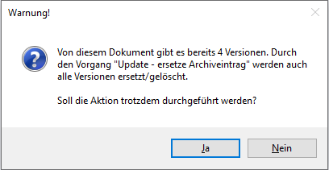
Beispiel
Es wird eine externe Excel-Kalkulation in das WinLine Archiv abgestellt. Nun wurde diese überarbeitet und soll wieder in das Archiv eingespielt werden. Damit es zu keinerlei Irritationen kommt, soll die alte Kalkulation durch die neue ersetzt werden.
Ø neue Version einspielen
Mit Hilfe dieses Buttons kann dem Archivdokument eine neue Version des aktuellen Dokuments hinzugefügt werden. Die maximale Anzahl von Versionen wird in den Archiv-Parametern definiert. Der Wechsel zwischen den Versionen kann über die Spalte "Versionsnummer" oder in der Dokumenten-Vorschau stattfinden.
Beispiel
Es wird eine externe Excel-Kalkulation in das WinLine Archiv abgestellt. Nun wurde diese überarbeitet und soll wieder in das Archiv eingespielt werden. Um einen Verlauf der Überarbeitung sehen zu können, wird eine neue Version gebildet.
Ø Beschlagwortung
Über diesen Button wird das Fenster Dokumenten-Beschlagwortung geöffnet. In diesem können Schlagwörter zum Archivdokument hinzugefügt bzw. vorhandene Schlagwörter bearbeitet werden.
Achtung
Eine Änderung der Beschlagwortung kann dazu führen, dass das Dokument beim Auslösen einer neuen Suche nicht mehr wiedergefunden wird.
Ø Ausgabe Excel
Durch Anwahl des Buttons "Ausgabe Excel" wird der Inhalt der Tabelle an Microsoft Excel übergeben.
Ø Tabelleneinstellungen speichern
Die Spalten einer Tabelle können grundsätzlich an beliebige Positionen verschoben, bzw. in der Breite entsprechend angepasst werden. Durch Anwahl des Buttons "Tabelleneinstellungen speichern" werden die Einstellungen benutzerspezifisch gespeichert und bei dem nächsten Aufruf des Programmpunktes wieder vorgeschlagen.
Ø Gesamteinstellungen speichern
Im Gegensatz zu "Tabelleneinstellungen speichern" können mit "Gesamteinstellungen speichern" mehrere Tabellenaufbauten gespeichert und nach Wunsch geladen werden. Zusätzlich werden Sonderfunktionen der Tabelle (z.B. "Spalte gruppieren") ebenfalls bei der Speicherung bedacht.
Tabelle "Klammerung"
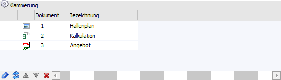
Durch Anwahl des Buttons "Klammerung" wird die Tabelle "Klammerung" angezeigt. In dieser können mehrere Archivdokumente zu einem Eintrag zusammengefasst werden. Dieses ist dann sinnvoll, wenn z.B. mehrere Scans eines Geschäftsvorfalls zusammengefasst werden sollen. Natürlich können auch die Einträge eines z.B. Besprechungstermin (Protokoll, Bilder, etc.) zusammengefasst werden. Neben dem zusammenfassen ist auch ein Auflösen der Klammerung oder das Verschieben der Reihenfolge innerhalb der Klammerung möglich.
Achtung
Zunächst muss die Tabelle mit Dokumenten versehen werden, welche geklammert oder entklammert werden sollen. Hierzu werden die Dokumente aus der Tabelle "Archiv" per Drag & Drop in die Tabelle "Klammerung" gezogen.
Auf diese Art und Weise werden alle gewünschten Dokumente in die Tabelle gelegt. Ausgehend davon können nun mehrere Aktionen durchgeführt werden (siehe "Tabellenbuttons").
In der Tabelle selber sind folgende Spalten ersichtlich:
Ø Klammerung
In dieser Spalte wird durch ein Ordner-Symbol angezeigt, ob es sich um eine bereits bestehende Klammerung handelt.
Beispiel
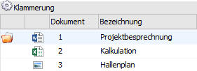
Ø Dateiart
Zur besseren Orientierung wird hier das Icon der Dateiart gemäß Windowseinstellung angezeigt. Des Weiteren kann per Doppelklick das aktuelle Dokument in dem dafür vorgesehenen Windows-Programm geöffnet werden.
Ø Dokument
In dieser Spalte wird die Reihenfolge in Form einer Zahl angezeigt.
Ø Bezeichnung
An dieser Stelle wird der Dateiname des Archivdokuments angezeigt.
Tabellenbuttons "Klammerung"
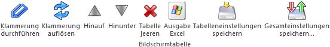
Ø Klammerung durchführen
Durch Anklicken des Buttons "Klammerung durchführen" werden die in der Tabelle befindlichen Archiveinträge zu einem Eintrag zusammengefasst, wobei im Standard das ersten Dokument in der Archivanzeige optisch ersichtlich ist (die Einträge bleiben unverändert, es wird nur auf eine gleiche Dokumenten-ID verwiesen).
Hinweis - Anzeige
In der Tabelle "Archiv" sind geklammerte Dokumente durch die Spalten "Klammerung" und "Dokumente" ersichtlich. Mit Hilfe der Spalte "geklammertes Dokumenten Nr." (oder über die "Dokumenten-Vorschau") kann gewählt werden, welches Dokument betrachtet werden soll.
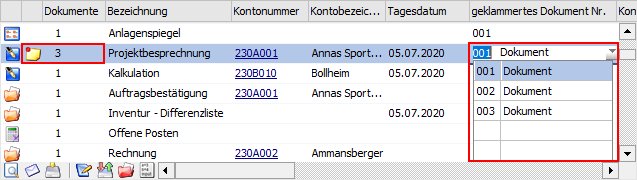
Hinweis - Ausgabe
Wenn geklammerte Dokumente per Mail verschickt werden sollen, dann gibt es hier zwei Möglichkeiten:
ü Es wurden mehrere WinLine -
Dokumente zusammengefasst
In diesem Fall wird eine SPL-Datei verschickt, die
alle diese Dokumente beinhaltet. Über die Auswahlliste des Spoolviewers kann das
gewünschte Dokument angesehen werden.
ü Es wurden andere Dokumente (extern
archivierte Dokumente) zusammengefasst
In diesem Fall wird für jeden
Dokumententyp eine eigene Anlage beim Mail angehängt (z.B. XLSX-Datei, DOCX
Datei und SPL-Datei).
Ø Klammerung auflösen
Wird ein geklammertes Dokument in die Tabelle gezogen und der Button "Klammerung auflösen" angewählt, so erfolgt zunächst die Abfrage, ob das geklammerte Dokument wieder entklammert werden soll:
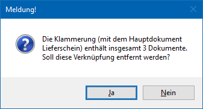
Wird die Meldung mit "Ja" bestätigt, dann werden die geklammerten Dokumente "aufgelöst" und stehen dann wieder als einzelne Dokumente im Archiv zur Verfügung. Wird die Meldung mit "Nein" bestätigt, bleibt das geklammerte Dokument bestehen.
Hinweis
Werden Dokumente entklammert, so erhalten alle Dokumente, welche in der Klammerung enthalten waren, automatisch alle Schlagwörter der Dokumente:
Beispiel
Dokument A hat nur das Schlagwort "Kontonummer = 230A001".
Dokument B hat nur "Tagesdatum = 06.07.2020" als Schlagwort.
Dokument C hat die "Projektnummer = 4711" als Schlagwort.
Diese 3 Dokumente wurden zu einem Dokument geklammert, wobei auch "Vertreternummer = 2" als Schlagwort hinzugefügt wurde.
Wird nun dieses 3-teilige Dokument entklammert, so erhalten alle 3 Dokumente alle erfassten Schlagwörter, d.h. "Kontonummer 230A001", "Tagesdatum = 06.07.2020", "Projektnummer = 4711" und "Vertreternummer = 2".
Ø Hinauf / Hinunter
Mittels dieser Buttons können Dokumente innerhalb der Tabelle / Klammerung verschoben werden.
Ø Tabelle leeren
Durch Anklicken des Buttons "Tabelle leeren" werden alle Einträge aus der Tabelle entfernt. Dies hat keine Auswirkungen auf irgendwelche Archiveinträge, d.h. es werden dadurch keine Klammerungen entfernt, Archiveinträge gelöscht oder dergleichen.
Ø Taste "Entfernen"
Durch Anklicken der Taste "Entfernen" können bereits geklammerte Dokumente aus der Klammerung entfernt werden, wobei zunächst folgende Sicherheitsabfrage erscheint:
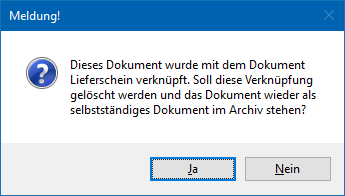
Damit wird wieder der ursprüngliche Dokumenten-ID vergeben und das entfernte Dokument ist wieder ein eigenständiger Archiveintrag.
Ø Ausgabe Excel
Durch Anwahl des Buttons "Ausgabe Excel" wird der Inhalt der Tabelle an Microsoft Excel übergeben.
Ø Tabelleneinstellungen speichern
Die Spalten einer Tabelle können grundsätzlich an beliebige Positionen verschoben, bzw. in der Breite entsprechend angepasst werden. Durch Anwahl des Buttons "Tabelleneinstellungen speichern" werden die Einstellungen benutzerspezifisch gespeichert und bei dem nächsten Aufruf des Programmpunktes wieder vorgeschlagen.
Ø Gesamteinstellungen speichern
Im Gegensatz zu "Tabelleneinstellungen speichern" können mit "Gesamteinstellungen speichern" mehrere Tabellenaufbauten gespeichert und nach Wunsch geladen werden. Zusätzlich werden Sonderfunktionen der Tabelle (z.B. "Spalte gruppieren") ebenfalls bei der Speicherung bedacht.